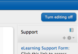

Instructors have the ability to hide or unhide items on the Course Home Page to make them visible or not visible to the students enrolled in the class. For example, if the instructor does not plan to use the "Question and Comments forum" to communicate with students through the eLearning interface, the item can be hidden on the page so that students do not see it and are not confused by it's presence on the page.
Click the "Turn editing on" button, located in the upper right corner of the page.

The text will turn gray, indicating that the
item is hidden from student view. You, as an instructor with instructor access
rights in the system, will still be able to view the item, however, a student
will not see the item at all on their screen.
After hiding the items, you wish to hide, click the "Turn editing off" button to make the editing icons disappear.
You will want to choose Show from the Edit drop down, and will need to have Turn editing on. When an item is hidden the text will be gray. To unhide the item and make it visible to students again, simply click the closed eye icon and it will reopen and the text will show in color again.
When an item is hidden the text will be gray. To unhide the item and make it visible to students again, simply click the closed eye icon and it will reopen and the text will show in color again.